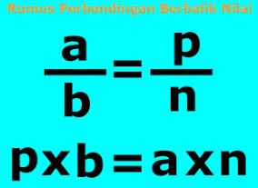

Perbandingan berbalik nilai adalah perbandingan dari dua atau lebih besaran dimana jika suatu unsur bertambah, maka unsur lainnya berkurang atau turun nilainya dan sebaliknya. Konsep logika yang digunakan adalah berbanding terbalik.
Contoh penerapan perbandingan berbalik nilai adalah hubungan kecepatan kendaraan dan waktu tempuh. Semakin tinggi kecepatan kendaraan, maka semakin singkat waktu tempuhnya. Semakin lambat / rendah kecepatan kendaraan, maka semakin lama waktu tempuhnya.
Tabel di bawah ini menunjukkan hubungan antara kecepatan suatu kendaraan dengan waktu yang diperlukan untuk menempuh jarak 200 km.
| Kecepatan(km/jam) | Waktu Tempuh (jam) |
|---|---|
| 10 | 20 |
| 20 | 10 |
| 40 | 5 |
| 40 | 5 |
| 100 | 2 |
Antara waktu dan kecepatan merupakan perbandingan yang saling berbalikan. Perbandingan semacam ini dinamakan perbandingan berbalik nilai atau berbalik harga.

Sebuah pondok pesantren putri memiliki persediaan beras yang cukup untuk 35 anak selama 24 hari. Berapa hari beras itu akan habis jika penghuni pondok bertambah 5 anak?
Jawab:
=>Menggunakan cara dengan perhitungan perbandingan
| Banyak anak | Banyak hari |
|---|---|
| 35 | 24 |
| 35+5 | p |
Karena banyak anak dan banyak hari merupakan perbandingan berbalik nilai (berbalik harga) maka kita gunakan
Keterangan:
a dan b adalah nilai besaran
n adalah notasi untuk angka nyata (harga, jarak, kecepatan, dsb)
p adalah perhitungan perbandingan
Sekarang kita gunakan rumusnya dengan cara perkalian silang antara pembilang dan penyebutnya
$\frac{a}{b} = \frac{p}{n}$
$\frac{35}{40} = \frac{p}{24}$
Diselesaikan dengan perkalian silang
p x b = a x n
p x 40 = 35 x 24
40p = 840
p= $\frac{840}{40} = 21$
Jadi beras akan habis selama 21 hari
=>Menggunakan cara cepat
Berdasarkan soal:
Sebuah pondok pesantren putri memiliki persediaan beras yang cukup untuk 35 anak selama 24 hari. Berapa hari beras itu akan habis jika penghuni pondok bertambah 5 anak?
Jawab:
Yang diketahui adalah jumlah anak yaitu 35. Jadikan 35 sebagai pembilang (a). 24 hari sebagai pengali (n), dan yang ditanyakan adalah jumlah hari jika jumlah anak 40 (35 + 5). Jumlah anak yaitu 40 jadikan penyebut (b).
p = $\frac{a}{b}$ x n
p = $\frac{35}{40}$ x 24 = 21
Jadi beras akan habis selama 21 hari